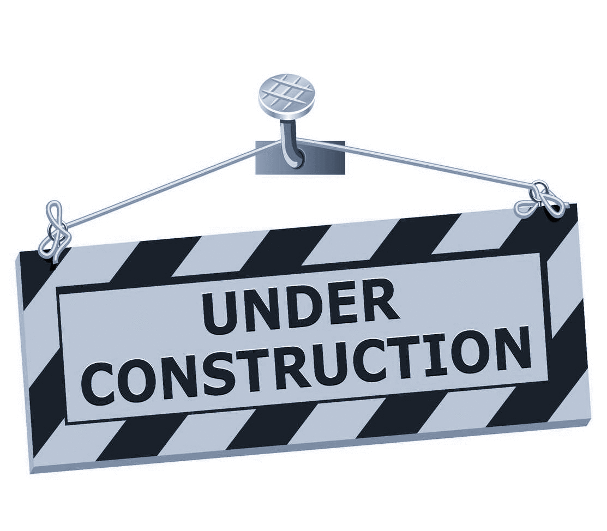

Tiffany Hansen, harpist
Quality Music for Special Occasions

Tiffany Hansen has played the harp for 29 years. Her musical pursuits have taken her to many places throughout Canada and the United States.
She has been the Principal Harpist of the Calgary Civic Symphony for the past 14 years. One of her greatest enjoyments in playing such an
elegant instrument is being able to provide a unique and memorable musical experience for weddings and special events.